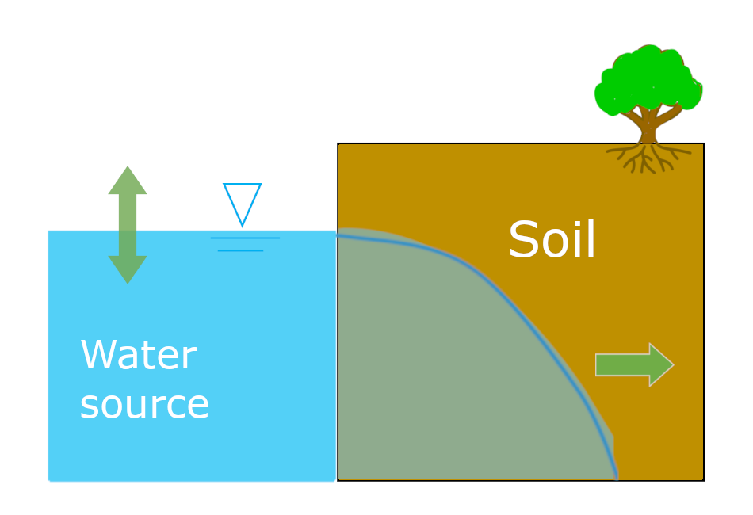
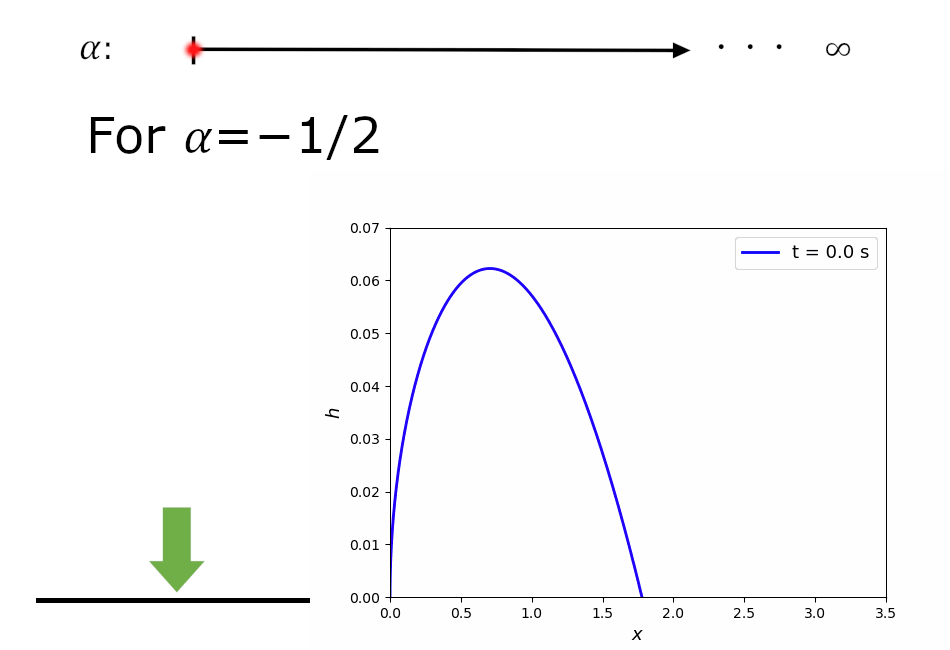
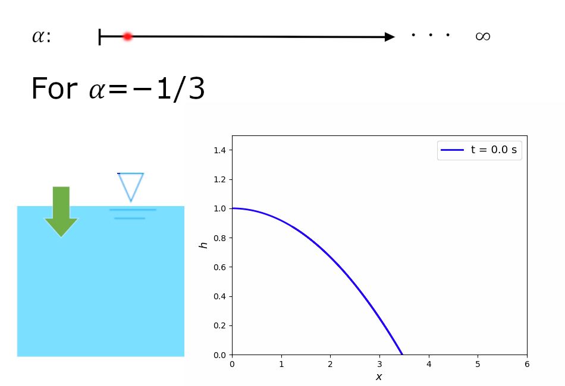
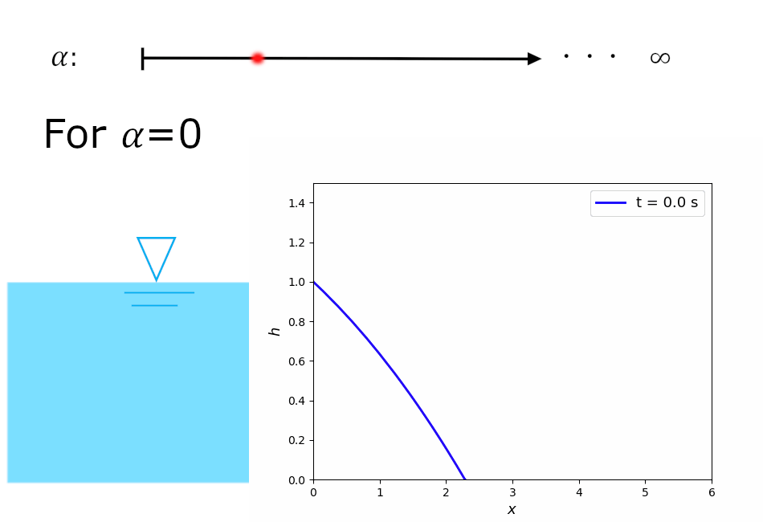
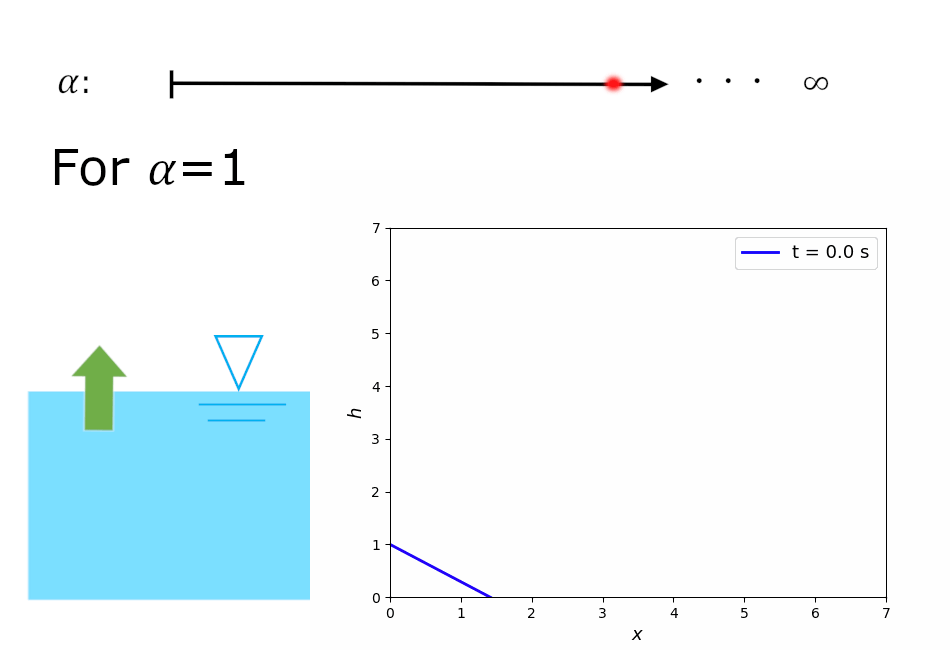
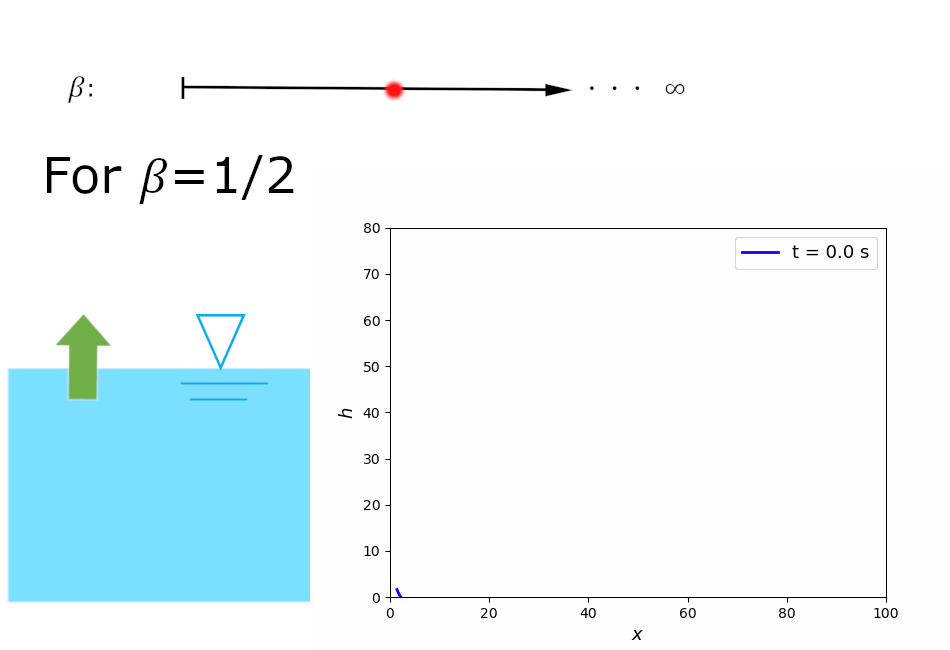
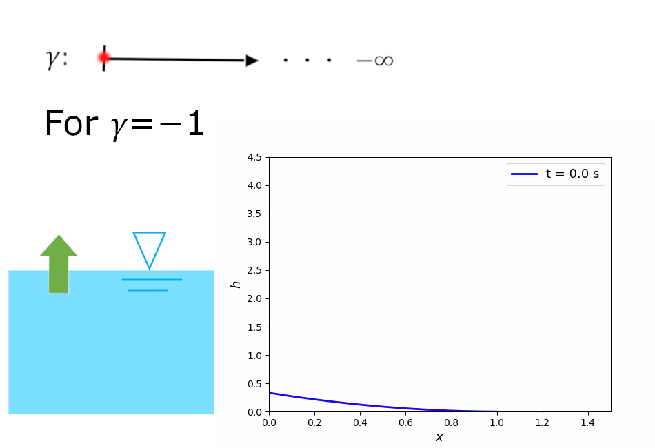

Research
Groundwater flows with similarity properties

This is the schematic illustration of my research subject, groundwater flows with unconfined aquifers.

All of the similarity solutions of groundwater flow are summarized in the above fiuger.

This is the dipole solution and represents instantaneous depletion of water sources.

This is the point source solution and represents free spread mound of groundwater.

This is the stationary solution and represents stationary water source.

This is the traveling wave solution and represents linear increase in source water level.

This is the exponential similarity solution and it has still traveling wave like shape.

This is the waiting time solution, which is a kind of the backward similarity solutions.
Soil water flows and its stochastic processes

SPDE formulations of soil moisture transport and particle-based simulations.